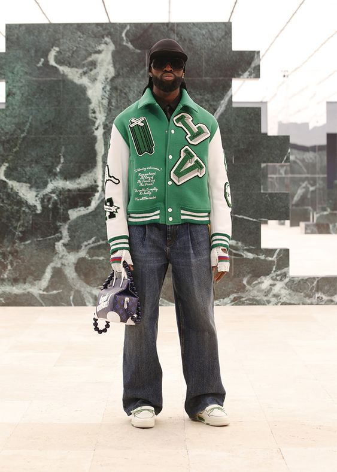

Louis Vuitton.
Em 2018, mais um salto quântico, Virgil é nomeado diretor artístico da linha masculina da Louis Vuitton, entrando no lugar de um de seus mentores, o designer Kim Jones, atual diretor criativo da Dior Homme e da Fendi. O apontamento trouxe mais uma conquista inédita ao designer que se tornou o primeiro homem negro a ocupar o cargo. Importante ressaltar que a Louis Vuitton é o carro-chefe do maior conglomerado de luxo do mundo, o LVMH, tornando o feito ainda mais significativo.
